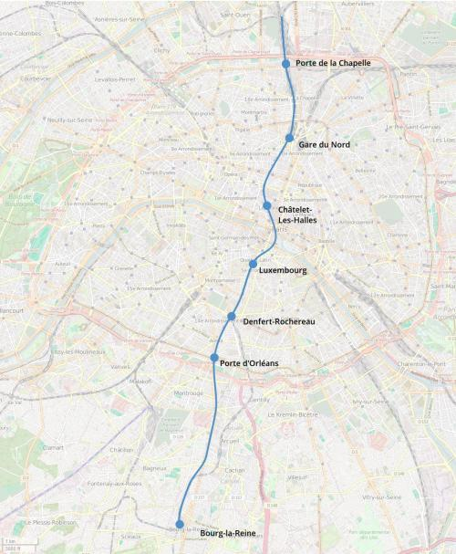

RER B Tronc commun quadruplé
RER B Tronc commun quadruplé
Bourg-la-Reine - Aulnay-sous-Bois
Une extension de la ligne B du RER.
Le tronc commun du RER B pose des problèmes entre Gare du Nord et Bourg-la-Reine. Entre Gare du Nord et Chatelet-les-Halles, le partage d'infrastructures saturées entre les RER B et D nuit gravement à la régularité des deux lignes et fragilise leur exploitation. Au sud de Châtelet, les stations de la ligne B sont trop rapprochées ce qui nuit à la vitesse moyenne des trains tout en amplifiant les retards par un effet de blocage d'un train par le précedent encore en gare.
L'operation de quadruplement du tronc commun consiterait à creuser un nouveau tunnel entre Bagneux et Denfert Rochereau sous la nationale 20 via Porte d'Orléans par lequel transiteraient les trains semi-directs en provenance de Saint-Rémy-les-Chevreuse et Saint-Quentin-en-Yvelines.
Les travaux seraient réalisés en commun avec les troncs communs du RER F (Gare de Porte d'Orléans commune avec le RER B) et du RER G (Base de travaux à Denfert-Rochereau).
À plus longue échéance, le nouveau tunnel serait prolongé pour desservir Luxembourg et Châtelet, sans desservir Port-Royal ni Saint-Michel pour maintenir une interstation suffisament longue et une bonne vitesse moyenne. La gare de Châtelet-les-Halles serait étendue et réaménagée avec deux niveaux de voies pour offrir 2 voies à quai pour chaque RER (A, B et D) et pour chaque sens ainsi que des quais plus large pour le RER D. De Châtelet-les-Halles un nouveau tunnel partirait vers la gare du Nord qui serait elle aussi étendue et réaménagée pour la jonction TGV Nord - Lyon - Montparnasse.
En complement de ces travaux, une nouvelle gare à Porte de la Chapelle RER B D permettrait la correspondance avec le métro 12, le t3b et la Petite Ceinture Express pour une meilleure liaison entre le nord et le sud de Paris.
On envisagera également la mise à 4 voies de la gare la Croix de Berny (cf le projet du Grand Orlyval) et du tronçon de la Fontaine-Michalon aux les Baconnets (réalisé en même temps que l'interconnexion LGV Sud par Orly TGV) qui peuvent être realisés à peu de frais.
Voir les autres projets associés à cette ligne
Carte
{kind=link}

Cliquer pour agrandir
Si ce projet vous intéresse n'hésitez pas à le (re-)partagez sur les réseaux sociaux ou par courriel ou à en parler autour de vous.
Si vous souhaitez travailler à la concrétisation de ce projet, passez à l'action et contactez nous.
Commenter